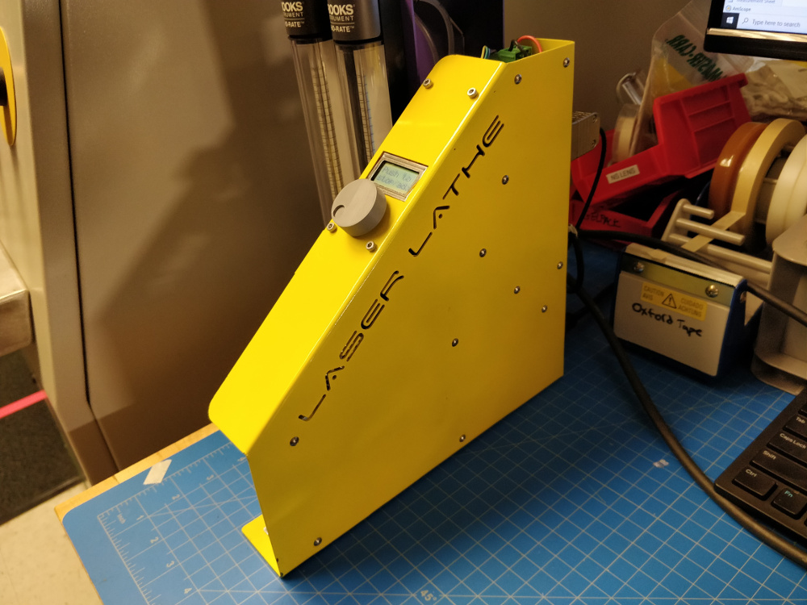

As part of a broader effort to improve the performance of solid-state NMR spectroscopy by fabricating magic-angle-spinning (MAS) rotors out of diamond (you can read quite a bit more here; drop me a line if you don't have institutional access to the paper and are curious), I built a precision laser lathe designed to machine both the inner and outer diameter of synthetic diamonds using a nanosecond-pulsed 532 nm laser. The images above show the apparatus mounted in the two machining positions ("lathe mode" and "turntable mode"); the short clip below shows an earlier version of the design beginning to tangentially machine the outer diameter of a diamond log, as filmed from inside the laser safety enclosure:
The heart of the lathe is a commercially available brushless rotary stage made by Thorlabs, originally manipulated by an open-source Odrive controller in a sweet custom case I bent and spot-welded out of sheet metal (which was later switched out for a commercial stage controller):

Most of the structure was fabricated using abrasive jet machining:
... or wire-EDM, both lovely tools every shop should aspire to obtain:
The lathe rides on a 2-axis micron-accurate precision stage, part of our lab's Oxford A-series laser machining system. A fabricated flexural aluminum base allows the lathe itself to be trammed in to the Oxford's Cartesian axes, a somewhat tedious process which uses a non-contact laser displacement sensor to sweep along lapped reference surfaces and a set of precision microadjusters.